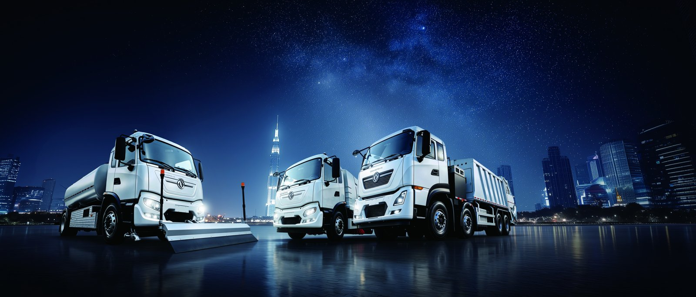

Qatar’s National Vision 2030 sets a clear direction: a diversified, environmentally sustainable economy in which public services — including municipal fleet operations — move toward lower emissions. For fleet buyers, that vision is no longer abstract. The Ministry of Transport’s EV strategy, the Tarsheed efficiency programme, Kahramaa’s charging rollout and Ashghal’s municipal procurement all shape how and whether an electric truck in Qatar gets approved and funded. This article distils what overseas fleet buyers need to know.
Qatar National Vision 2030 rests on four pillars, one of which is environmental sustainability. Transport is a visible target because fleets are concentrated, measurable and publicly owned or contracted. The Ministry of Transport has signalled a staged shift of government and municipal fleets toward electric and low-emission vehicles, supported by Tarsheed, the national energy-efficiency programme that promotes reduced consumption across sectors. For a fleet buyer, the practical reading is: tenders for municipal and public works now score emissions, and an EV truck can win points that a diesel cannot.
Kahramaa, Qatar’s electricity authority, is expanding public and semi-public charging as part of the wider sustainability push. For municipal fleets the more relevant fact is depot charging: a refuse fleet returns to a yard nightly, so a 120-240 kW depot unit fed from the grid is sufficient. Qatar’s low electricity cost — roughly US$0.08-0.12 per kWh for commercial users — makes depot-charged sanitation the cheapest duty cycle in the region. The Qatar market page tracks current incentive and charging developments for buyers planning a 2026-2028 rollout.
Ashghal, the Public Works Authority, is the other procurement lever fleet buyers must watch. Its municipal and public-realms programmes increasingly specify lowest lifecycle emissions, and an electric garbage truck arrives with a telemetry story a diesel cannot match: kWh per tonne collected, kilometres on battery, and a zero local-emission certificate for each district. For a contractor bidding Ashghal-aligned work, leading with the KT3E’s measured profile is often the difference between a scored tender and a rejected one. We prepare those lifecycle statements as part of the export package rather than leaving the contractor to assemble them.
The KT3E is a compactor-class electric garbage truck with a 180-220 kWh CATL LFP battery, built for the stop-go collection cycle where an EV truck’s advantages are largest. The LvKong motor produces 180-240 kW, with the low-end torque needed to pull away from every stop fully loaded. Critically, the compaction hydraulics run off the high-voltage pack through an electric PTO, so the body works whether the truck is moving or stationary — no idling diesel screaming at a kerb at 6 a.m.
Real-world range is 150-200 km per charge on a collection route, enough for a full district loop. DC charging 20-80% lands in 40-55 minutes, and the 8-year / 4,500-cycle warranty to 70% SOH covers the hard daily duty. The sealed LFP pack tolerates Qatar’s 45-50 °C summer with active thermal management.
The body configuration is what lets one KT3E serve several duty types. The same chassis carries a rear compactor for household collection, a washer for street cleaning and a split hopper for separated recyclables, so a municipality can standardise its whole sanitation fleet on a single electric platform. That standardisation cuts spare-part holdings and technician training, and it lets the depot scale chargers once rather than per body type. For a Qatari authority reporting against National Vision 2030, a uniform electric fleet is also simpler to audit than a mixed diesel-and-EV yard — every vehicle reports the same telemetry, every district shows the same zero local-emission result, and the tender scoring stays consistent across the rollout.
| Parameter | KT3E Electric Garbage Truck |
|---|---|
| Body | Rear compactor, electric PTO |
| Battery | 180-220 kWh CATL LFP |
| Motor | LvKong 180-240 kW |
| Route range | 150-200 km / shift |
| DC charge 20-80% | 40-55 min at 180 kW |
| Warranty | 8 yr / 4,500 cycles to 70% SOH |
| FOB price band | US$85,000-105,000 |
Qatar commercial diesel is around US$0.55-0.70 per litre; electricity is roughly US$0.08-0.12 per kWh. A diesel compactor burns 0.40-0.55 L/km on a collection route with heavy idling; at US$0.62/L that is US$0.25-0.34 per km. The KT3E draws 1.0-1.4 kWh/km; at US$0.10/kWh that is US$0.10-0.14 per km — about 60% lower. Maintenance savings from the engine-free drivetrain add US$0.04-0.07 per km. On 110 km per night, 320 nights a year, the combined annual saving is US$9,000-14,000 per truck. With National Vision 2030 tender advantages and any customs relief, payback lands in 30-48 months — and the quiet, zero-exhaust collection improves neighbourhood acceptance in dense Doha districts.
The summer operating case strengthens the argument further. Doha regularly exceeds 45 °C, and a diesel compactor at a kerb runs its engine and cooling fan at full load simply to power the body — wasting fuel and pumping heat into the street. The KT3E powers brushes, compactor and washer from the traction pack with no separate idling engine, so the only heat added is the inverter’s, which the thermal loop rejects efficiently. Crews report a markedly cooler, calmer worksite, and municipalities report fewer noise complaints from the early-morner collection window that diesel fleets struggle to keep quiet.
Shaanxi Fenghan Trading exports the KT3E worldwide with GCC specification, thermal-managed pack, compaction body options and telematics for tender reporting. We support Ashghal-aligned documentation and lifecycle-emission statements. The Qatar market page details import and conformity steps. Contact us with your district route length and we will model the KT3E business case against your diesel baseline.
Charger siting is the operational detail that makes or breaks a Qatari rollout. A refuse fleet returns to one yard, so a single 180-240 kW depot unit serving four to six KT3E trucks overnight is usually enough, and the low Qatar electricity tariff keeps that energy cheap. The trap is the summer peak: if every truck plugs in at once at 4 p.m. the site draw spikes, so we stage charging across the return window with the telematics scheduler, topping each pack to 90% before the next departure. For municipalities without reliable yard power we pair the depot with a small solar-and-battery buffer so collection never stops on a grid dip — the same resilience logic that donor programmes favour. Body wash-down, compactor greasing and brush inspection are the only routine jobs left, and our Doha-service partner stocks packs, motors and wear items so a failed unit is swapped, not parked. That support structure is what lets a Qatari authority commit to an all-electric sanitation district rather than a token pilot.
The rollout we recommend for Qatar is district-by-district, starting with the Doha neighbourhoods where noise and emission complaints are loudest. A municipality can deploy a handful of KT3E units on one route, publish the measured kWh-per-tonne and zero-local-emission results, and use that evidence to unlock the next tranche of National Vision 2030 funding. Because the trucks charge at the existing depot and need no new fuel infrastructure, the marginal cost of each added district is just the vehicles and a charger — a clean, scalable story for a public works authority reporting to a sustainability mandate. We supply the telemetry and the statements; the municipality supplies the route.
Ready to electrify your fleet? Contact Shaanxi Fenghan Trading — authorized Dongfeng EV truck exporter. WhatsApp: +86 153 1943 1311 | Email: sales@fenghan-trade.com | dongfengevtrucks.com
🌐 Our Network: Fenghan Trade (SAGMOTO/SHACMAN Truck Export) · SAGMOTO heavy duty diesel trucks